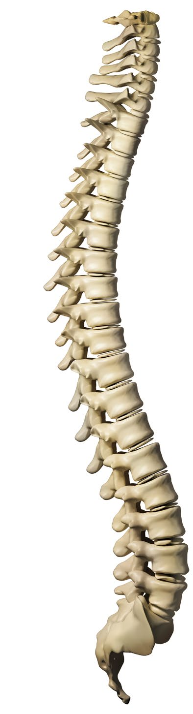

5 Erhöhte Belastungen – was tun?5 Erhöhte Belastungen – was tun?
5 Erhöhte Belastungen – was tun?5 Erhöhte Belastungen – was tun?Das T-O-P – Prinzip
Arbeitsplätze müssen menschengerecht gestaltet sein, um gesundheitsschädliche Belastungen zu vermeiden. Können Belastungen nicht vermieden werden, so sind sie zu minimieren (Minimierungsgebot). Erhöhte oder hohe Belastungen beeinträchtigen die Leistung der Beschäftigten und damit den Erfolg des Unternehmens. Sie führen zu häufigen Erkrankungen mit Fehlzeiten, Störungen im Betrieb und damit zu zusätzlichen Kosten.
Was bedeutet das für Ihren Betrieb?
Bei der Planung oder Veränderung von Arbeitsplätzen sollten ergonomische Erkenntnisse möglichst frühzeitig berücksichtigt werden, um spätere, in der Regel kostenintensivere Korrekturen zu vermeiden. Arbeitsplanerinnen und -planer, Fachkräfte für Arbeitssicherheit, Betriebsärztinnen und Betriebsärzte und Beschäftigte sollten daher frühzeitig einbezogen werden.
Die Beschäftigten wissen oft genau, welche Belastungen an ihrem Arbeitsplatz bestehen. Es empfiehlt sich daher, deren Kenntnisse und Erfahrungen bei der Gestaltung von Arbeitsplätzen und der Optimierung von Arbeitsabläufen zu nutzen.
Ob körperliche Belastungen am Arbeitsplatz auftreten, ist von vielen Einflussfaktoren abhängig. Arbeitsplatzgestaltung, Arbeitsauftrag, Arbeitsverfahren, zu bearbeitendes Material bzw. Produkt und den dabei verwendeten Maschinen und Werkzeugen sowie das individuelle Verhalten der Beschäftigten sind prägende Faktoren. Sie stellen die möglichen Gestaltungsfelder zur Vermeidung oder Minderung von Belastungen dar.
Es gibt eine Vielzahl von Maßnahmen zur Beseitigung oder Minderung von Belastungen. Zur optimalen Verringerung der Belastungen ist oft eine Kombination mehrerer dieser Maßnahmen sinnvoll oder sogar erforderlich. Eine Auswahl praxisnaher Lösungsansätze aus unterschiedlichen Branchen finden Sie in der DGUV Information 208-053 "Mensch und Arbeitsplatz – Physische Belastungen" (dguv.de -> Webcode p208053).
Bei der Umgestaltung von Arbeitsplätzen mit Gefährdungen für das Muskel-Skelett-System sollen technische Maßnahmen grundsätzlich Vorrang vor organisatorischen oder personenbezogenen Maßnahmen haben. Darum das "TOP-Prinzip" der Prävention:
Technische Maßnahmen |
|
Organisatorische Maßnahmen |
|
Personenbezogene Maßnahmen |
Die Reihenfolge dieser Aufzählung entspricht zugleich der Rangfolge durchzuführender Maßnahmen.
Anstelle des TOP-Prinzips werden manchmal auch erweiterte Prinzipien zur Einteilung von Schutzmaßnahmen angewandt.
Das "STOP-Prinzip" ist hierbei eine relativ verbreitete Variante, wobei das "S" in diesem Fall für den Begriff Substitution steht. Das bedeutet, dass Arbeitsschritte, die das Muskel-Skelett-System gefährden, durch andere nicht gefährdende Arbeitsschritte ersetzt (substituiert) werden sollen. S-Maßnahmen zielen also darauf ab, an der "Quelle" der Gefährdung anzusetzen und ein Arbeitsverfahren möglichst frei von gefährdenden Belastungen zu gestalten. Ist dies nicht möglich, muss die Gefährdung so gering wie möglich gehalten werden.
Ein Beispiel für eine S-Maßnahme ist der Wechsel von Verbindungstechniken ("Kleben" anstelle von "Nieten", um die impulsartigen Stöße auf das Hand-Arm-System der Beschäftigten zu vermeiden). Anders als beim Einsatz von Gefahrstoffen ist in der Praxis eine Unterscheidung zwischen S-Maßnahmen und T-Maßnahmen für Muskel-Skelett-Belastungen nicht immer einfach möglich. Daher werden in dieser Schrift die S-Maßnahmen mit den T-Maßnahmen zusammengefasst betrachtet.
wie Technische Maßnahmen |
Technische Maßnahmen sind alle Maßnahmen, die mit Arbeitsplatzgestaltung, Arbeitshilfen, gestaltenden Elementen etc. eine Entlastung bei körperlichen Belastungen bieten können.
Diese zielen darauf ab, gefährdende Belastungen zu vermeiden. Ist das nicht möglich, gilt wiederum das Minimierungsgebot.
Beispiele für T-Maßnahmen sind der Einsatz von Hebehilfen, um schwere Lasten aber auch Menschen nicht mehr manuell bewegen zu müssen und der Einsatz von vibrationsarmen Werkzeugen, z. B. Bohrhämmer mit schwingungsgedämpften Griffen, um die Gefährdung durch Hand-Arm-Vibrationen zu minimieren.
wie Organisatorische Maßnahmen |
Organisatorische Maßnahmen sind zu veranlassen, wenn durch technische Maßnahmen die körperlichen Gefährdungen nicht vermieden oder ausreichend reduziert werden können. O-Maßnahmen zielen schwerpunktmäßig auf Veränderungen von Arbeitsablauf und -organisation ab.
Beispiele für organisatorische Maßnahmen sind die Verringerung des Lastgewichtes durch kleinere Gebinde, die Einführung einer belastungsorientierten Job-Rotation oder die Optimierung der Pausengestaltung.
wie Personenbezogene Maßnahmen |
Personenbezogene Maßnahmen ergänzen die technischen und organisatorischen Maßnahmen und tragen so zur Vermeidung oder Minderung von Gefährdungen des Muskel-Skelett-Systems bei.
Beispiele für P-Maßnahmen sind Persönliche Schutzausrüstung (PSA) wie Knieschutz, personengetragene Arbeitshilfsmittel wie Tragegurte, geeignete Arbeitsschuhe und Arbeitshandschuhe, die arbeitsmedizinische Vorsorge, die Unterweisung von Beschäftigten oder auch das Angebot einer Betrieblichen Gesundheitsförderung (BGF).
Unterweisung der Beschäftigten
Der Erfolg aller Maßnahmen hängt stark von der Motivation und dem Verständnis der Beschäftigten ab. In Unterweisungen sollte deshalb auf mögliche Gefährdungen, Maßnahmen zur Reduzierung körperlicher Belastungen, Verhaltensregeln und Notfallvorgaben hingewiesen werden. Praktische Übungen unterstützen die Beschäftigten beim Einsatz vorhandener Hilfsmittel oder dem ergonomischen Heben und Tragen. Gleichzeitig erhöhen sie die Akzeptanz der Maßnahmen.
Die Maßnahmen sollten in Betriebsanweisungen oder in Betriebsvereinbarungen dokumentiert werden. In Anhang 4 ist ein Muster einer Betriebsanweisung zum manuellen Handhaben von Lasten zu finden.
P-Maßnahmen unterstützen gut, wenn die Beschäftigten ihr Verhalten dauerhaft ändern. Vorgesetzte haben hierbei eine Vorbildfunktion und sollten die Beschäftigten bei Fehlverhalten direkt ansprechen, um eine nachhaltige Verhaltensänderung zu erreichen.
Betriebliche Gesundheitsförderung
Die Betriebliche Gesundheitsförderung bündelt verschiedene Gesundheitsressourcen im Unternehmen und bietet einen ausgewogenen Mix an Maßnahmen. Das sind einerseits die ergonomische Gestaltung von Arbeitsplätzen und Arbeitsabläufen und andererseits Maßnahmen zur Beeinflussung des Verhaltens der Beschäftigten, zum Beispiel Angebote für Ausgleichsübungen und zur Bewegungsförderung, Ernährung oder Entspannungstechniken.
Diese Maßnahmen können dazu beitragen, die Leistungsfähigkeit und die Gesundheit der Beschäftigten zu erhalten bzw. zu steigern sowie die langfristige Beschäftigungsfähigkeit zu sichern.
Berufliche Situation und persönliche Interessen der Beschäftigten sind bei Angeboten der Gesundheitsförderung zu beachten. Hierzu zählen u. a. Ermüdung nach körperlicher Arbeit, Arbeitszeiten, verfügbare Freizeit durch Schichtsysteme, wechselnde Arbeitsorte und mobile Arbeitsplätze.
 Abb. 16 Wirbelsäule |
Arbeitsmedizinische Vorsorge Durch die arbeitsmedizinische Vorsorge sollen Beschäftigte über Gesundheitsrisiken aufgeklärt und beraten werden. Beeinträchtigungen der Gesundheit sollen verhindert oder frühzeitig erkannt werden, um ihren Auswirkungen rechtzeitig zu begegnen. Die arbeitsmedizinische Pflicht- oder Angebotsvorsorge bei Tätigkeiten mit wesentlich erhöhten körperlichen Belastungen und Vibrationen, die mit Gesundheitsgefährdungen für das Muskel-Skelett-System verbunden sind, wird durch die Verordnung zur arbeitsmedizinischen Vorsorge (ArbMed VV) (ArbMed VV) geregelt. Die Arbeitsmedizinische Regel 13.2 (AMR 13.2) beschreibt, wann wesentlich erhöhte körperliche Belastungen bei bestimmten Tätigkeiten anzunehmen sind und demzufolge ein Angebot zur Vorsorge erfolgen muss.Eine Vorsorge kann darüber hinaus zur Beurteilung der individuellen Belastbarkeit und im Rahmen einer Wiedereingliederung erfolgen. Außerdem kann dem Beschäftigten eine Wunschvorsorge gewährt werden, wenn beispielsweise ein Zusammenhang zwischen seiner Erkrankung und der Tätigkeit am Arbeitsplatz vermutet wird. Im Rahmen der arbeitsmedizinischen Vorsorge bei relevanten Belastungen des Muskel-Skelett-Systems können Betriebsärztinnen und Betriebsärzte die DGUV Empfehlung "Belastungen des Muskel-Skelettsystems einschließlich Vibrationen" (ehemals DGUV Grundsatz G 46) verwenden. |